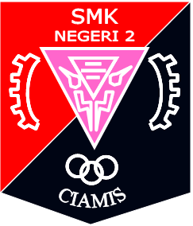

I graduated from the Department of Informatics Engineering at Siliwangi University. I finished my studies in 4.5 years with GPA 3.72. When i went to college i took networking vocational as my foundation in IT. In addition, web development also makes me interested in learning it.
Because of that i have skills from learning that's field. In addition to technical skills, I also have experience in organizing. When I was in junior high school to high school I was active in the student council and during college I was active in one of the campus communities.

SD Negeri 4 Kertasari
2005-2011
SMP Negeri 4 Ciamis
2011-2014
Full Name : Galang Pandu Sajati
Place and Date of Birth : Ciamis, 10 February 1999
Address : Ciamis, Jawa Barat, Indonesia
Last Education : S1 Informatics Engineering
Phone Number : -
Email : career.galang10@gmail.com
Hobbies : Gaming, Volley Ball, Watch Anime
Language : Indonesian, English

SMK Negeri 2 Ciamis
Computer and Network Engineering
2014-2017

Universitas Siliwangi
Bachelor (S1) - Informatics Engineering
2017-2021
With my experience from organization since I studied in school and college, I have good communication skill.
When I get a big group assignment on campus, my friend and I do a division of tasks that makes the task complete and on time.
If I am faced with something I have never done, I will seek it out and learn it.
When I am faced with many tasks, rather than taking the difficult task first, it is better for me to take the easy task first and then do the difficult task when the previous task is finished. But if the difficult task have a short deadline, i will complete them before the easy task.
In this internship program I learned about servers. starting from building, configuring, how to fix problems on the server, and how to maintain the server. This internship program starts from July 13 to October 8, 2020.